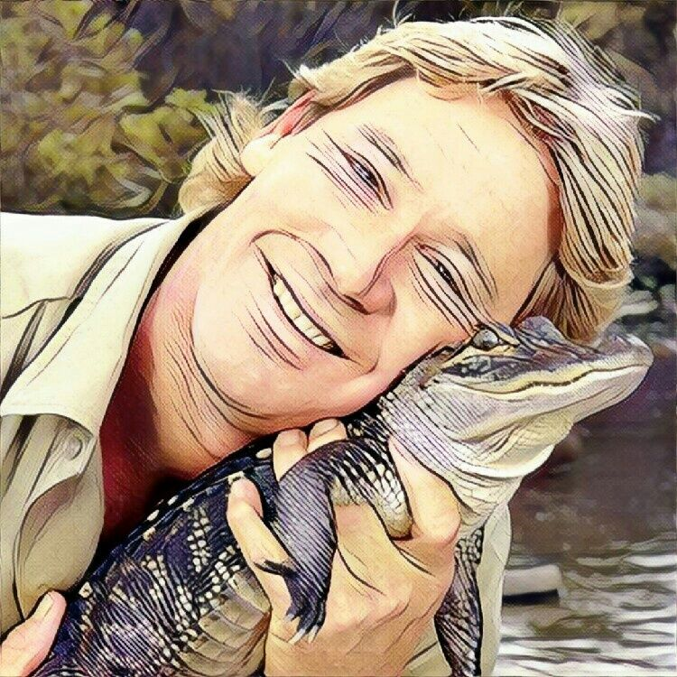
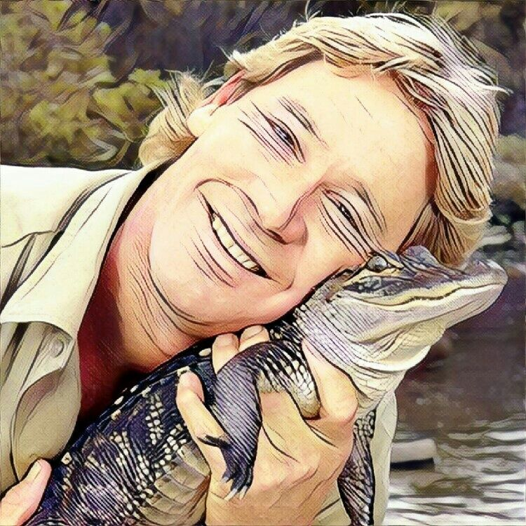
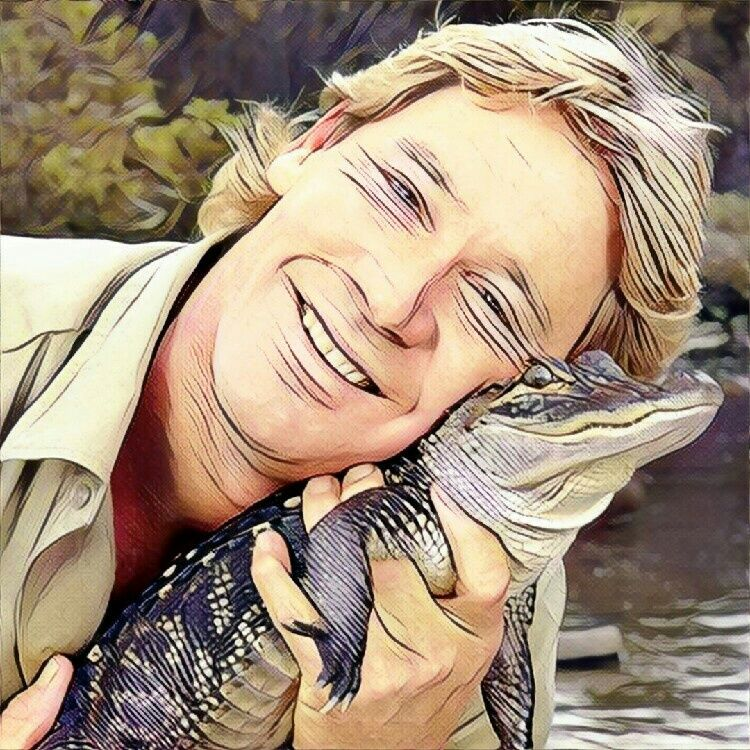
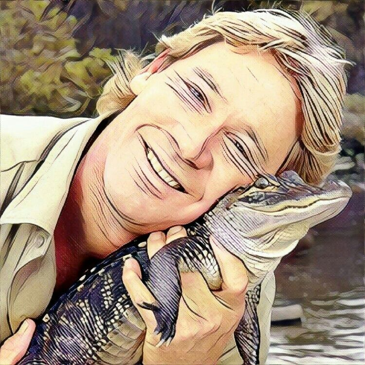

닫기


 


 



테스트 후 결과 문자받기
이벤트 참여/마케팅개인정보 수집이용에 동의합니다.
그냥 시작하기
비약, 변화의
가능성을
추진한다.
순서를 정해
일을 추진한다.
당신은
"재기발랄한 활동가"
창의적이며 항상 웃을 거리를 찾아다니는 활발한 성격으로 사람들과 자유롭게 어울리기를 좋아하는 넘치는 열정의 소유자
*자세한 내용은 취미 분석 결과지를 확인하세요.
재미난 취미 이야기가 담긴 하비박스 소식 받기
이벤트 참여/마케팅개인정보 수집이용에 동의합니다.